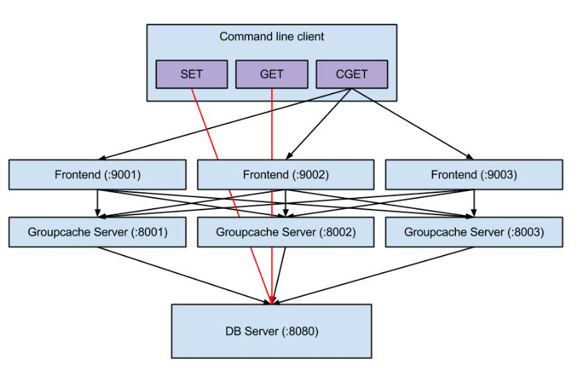

GroupCache
GroupCache是Brad Fitzpatrick 最新的作品，目标在于取代一部分memcached的功能。以官方的说明是：groupcache is a caching and cache-filling library, intended as a replacement for memcached in many cases.
另外一篇介绍文是「Playing With Groupcache」。跟memcached 差异最大的地方在于「没有更改与删除的功能」，一旦写进去后就不会变动。在放弃update/delete 的特性后，换来的是：
- Cluster 的能力。
- 处理热点的能力。
以往在memcached server 之间是没有交集的，在groupcache 则是cluster 起来。另外以前在memcached 会因为同时存取同一个key 而造成single CPU overloading 的问题，在groupcache 则透过auto-mirror 机制解决。参考：Go 语言编写的缓存及缓存过滤库：groupcache 。其中groupcache与memcached最大的区别是不需要启动额外的服务。groupcache作为lib库缓存数据，不需要单独开启服务器，减少了服务器额外维护的代价。groupcache也常被推荐为适合Golang初学者分析的代码段，这几天我也抽空分析了一下具体的实现，并结合Play With Groupcach简单的测试了GroupCache，实现的基本结构如下所示：

该软件结构图实现了一种只读型静态网站的分布式实现。主要包括三个服务器，其中DB Server是数据库，主要对外提供数据，在实际的场景中可以是NoSql数据库也可能是关系数据库。可对该数据库进行插入、新增数据。缓存服务器，分为前端和GroupCache Server，实际上将Cache Server包含在了业务代码中，其中前端是提供操作的相关接口，而后端部分通常作为业务服务器的一部分，缓存数据可直接被服务器使用。Cli部分主要是用于操作数据量和groupcache server交互。这部分代码可参考groupcache-db-experiment 。
基本过程如下所示:
- 首先创建一个GroupCache的HTTPool, peers。
- 创建Group对象， 设置该Group Cache的大小，数据实际获取的方法，其中的 groupcache.GetterFunc对应着实际从源头加载数据的方法，比如从数据库中获取、从文件中获取等。这也是必须的。groupcache.GetterFunc实际上是groupcache.Getter的接口实例。
- 设置对端GroupCache的地址信息。peers.Set(url1, url2, ...)
- 启动GroupCache的Http服务。在http.ListenAndServe("xxxx", http.HandlerFunc(peers.ServeHTTP))
- 要获取数据只需要通过创建的Group对象来获取即可。group.Get(xxx)。